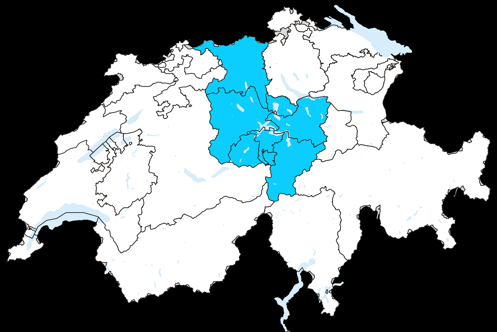

Wasserfilter gegen Schmutzpartikel
Es ist eine Vorrichtung zur Verbesserung der Wasserbeschaffenheit. Diese Verbesserung besteht im Allgemeinen darin, indem Partikel wie Trübstoffel bzw. Mikroorganismen oder unerwünschte gelöste Substanzen entfernt werden oder ihre Konzentration wesentlich gesenkt wird. Grobfilter helfen in der häuslichen Installation beim Schutz vor dem Eindrang aus dem lokalen Versorgungsnetz gelöster Teile und Substanzen wie Rostpartikel aus älteren Gusseisenrohren. Untertisch-Filter zulässt zu geringe Durchflussmenge für die Haushaltsversorgung mit 2 bis 3 l/min und dabei ist der regelmässige mindestens halbjährliche Filtertausch obligatorisch. Eine andere Möglichkeit besteht in der Behandlung des gesamten in einem Haushalt verwendeten Wassers. Hier wird eine Aufbereitungsanlage direkt hinter dem Hausanschluss bzw. der Wasseruhr installiert. Im Vordergrund steht bei diesen Anlagen häufig die Enthärtung, seltener werden hier Systeme eingesetzt, die auch gelöste organische Substanzen entfernen.
Wasser (H2O) ist eine chemische Verbindung aus den Elementen Sauerstoff (O) und Wasserstoff (H). Wasser ist als Flüssigkeit durchsichtig, weitgehend farb-, geruch- und geschmacklos. Es kommt in zwei Isomeren (para- und ortho-Wasser) vor, die sich im Kernspin der beiden Wasserstoffatome unterscheiden. Wasser ist die einzige chemische Verbindung auf der Erde, die in der Natur als Flüssigkeit, als Festkörper und als Gas vorkommt. Die Bezeichnung Wasser wird dabei für den flüssigen Aggregatzustand verwendet. Im festen Zustand spricht man von Eis, im gasförmigen Zustand von Wasserdampf. Wasser ist Grundlage des Lebens auf der Erde. In der Natur kommt Wasser selten rein vor, sondern enthält meist gelöste Anteile von Salzen, Gasen und organischen Verbindungen.
Wasser (H2O) ist eine chemische Verbindung aus den Elementen Sauerstoff (O) und Wasserstoff (H). Wasser ist als Flüssigkeit durchsichtig, weitgehend farb-, geruch- und geschmacklos. Es kommt in zwei Isomeren (para- und ortho-Wasser) vor, die sich im Kernspin der beiden Wasserstoffatome unterscheiden. Wasser ist die einzige chemische Verbindung auf der Erde, die in der Natur als Flüssigkeit, als Festkörper und als Gas vorkommt. Die Bezeichnung Wasser wird dabei für den flüssigen Aggregatzustand verwendet. Im festen Zustand spricht man von Eis, im gasförmigen Zustand von Wasserdampf. Wasser ist Grundlage des Lebens auf der Erde. In der Natur kommt Wasser selten rein vor, sondern enthält meist gelöste Anteile von Salzen, Gasen und organischen Verbindungen.
Wasser (H2O) ist eine chemische Verbindung aus den Elementen Sauerstoff (O) und Wasserstoff (H). Wasser ist als Flüssigkeit durchsichtig, weitgehend farb-, geruch- und geschmacklos. Es kommt in zwei Isomeren (para- und ortho-Wasser) vor, die sich im Kernspin der beiden Wasserstoffatome unterscheiden. Wasser ist die einzige chemische Verbindung auf der Erde, die in der Natur als Flüssigkeit, als Festkörper und als Gas vorkommt. Die Bezeichnung Wasser wird dabei für den flüssigen Aggregatzustand verwendet. Im festen Zustand spricht man von Eis, im gasförmigen Zustand von Wasserdampf. Wasser ist Grundlage des Lebens auf der Erde. In der Natur kommt Wasser selten rein vor, sondern enthält meist gelöste Anteile von Salzen, Gasen und organischen Verbindungen.
Dienstleistungen
- Filter
- Filter
- Filter
Wasser (H2O) ist eine chemische Verbindung aus den Elementen Sauerstoff (O) und Wasserstoff (H). Wasser ist als Flüssigkeit durchsichtig, weitgehend farb-, geruch- und geschmacklos. Es kommt in zwei Isomeren (para- und ortho-Wasser) vor, die sich im Kernspin der beiden Wasserstoffatome unterscheiden. Wasser ist die einzige chemische Verbindung auf der Erde, die in der Natur als Flüssigkeit, als Festkörper und als Gas vorkommt. Die Bezeichnung Wasser wird dabei für den flüssigen Aggregatzustand verwendet. Im festen Zustand spricht man von Eis, im gasförmigen Zustand von Wasserdampf. Wasser ist Grundlage des Lebens auf der Erde. In der Natur kommt Wasser selten rein vor, sondern enthält meist gelöste Anteile von Salzen, Gasen und organischen Verbindungen.
Wasser (H2O) ist eine chemische Verbindung aus den Elementen Sauerstoff (O) und Wasserstoff (H). Wasser ist als Flüssigkeit durchsichtig, weitgehend farb-, geruch- und geschmacklos. Es kommt in zwei Isomeren (para- und ortho-Wasser) vor, die sich im Kernspin der beiden Wasserstoffatome unterscheiden. Wasser ist die einzige chemische Verbindung auf der Erde, die in der Natur als Flüssigkeit, als Festkörper und als Gas vorkommt. Die Bezeichnung Wasser wird dabei für den flüssigen Aggregatzustand verwendet. Im festen Zustand spricht man von Eis, im gasförmigen Zustand von Wasserdampf. Wasser ist Grundlage des Lebens auf der Erde. In der Natur kommt Wasser selten rein vor, sondern enthält meist gelöste Anteile von Salzen, Gasen und organischen Verbindungen.
Was?
Wasser ist als Flüssigkeit durchsichtig, weitgehend farb-, geruch- und geschmacklos, das haben wir alle in der Schule gelernt. Doch wenn die Schmutzpartikel landen im Wasser, kann man es mit blossem Auge sehen? Da der Qualität und Verfügbarkeit des Wassers eine hohe Bedeutung für die Versorgungssicherheit der Bevölkerung sowie die öffentliche Hygiene und Gesundheit zukommt, sind Rechtsregeln und -normen zu dessen Schutz unerlässlich. In der Schweiz sind die wasserrechtlichen Kompetenzen zwischen dem Bund und den Kanton geteilt. Jedoch die Errichtung, Erhaltung und der Betrieb von Wasserversorgungsanlagen erfolgt durch Kommunen, Unternehmen, Wassergenossenschaften und -verbände oder durch privatwirtschaftlich organisierte Unternehmen.
Wo?
Ist ein Hauswasserfilter Pflicht?
Ja, mit metallischen Rohren Pflicht und bei Kunststoffrohren ist es empfohlen. Sonst müssen Sie mit braunem und stinkendem Wasser rechnen. Für die Trinkwasser-Installation und damit die Qualität des Trinkwassers in Ihrem Haushalt ist der Eigentümer verantwortlich.